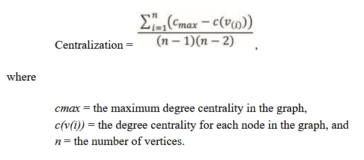
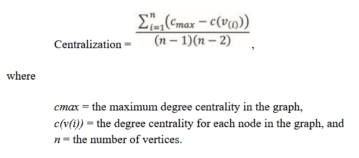

Iteratively bring together connected nodes and push apart unconnected nodes
Examples: Fruchterman-Reingold and Harel-Koren Fast Multiscale
Tree layout algorithms
Ideal for depicting hierarchical social structures
2.18 Social Network Metrics
Subgraph
A subset of a graph that we want to analyze
Metrics provide information about the properties of an entire network beyond what we can visualize
2.19 Paths and Components
If a path between two nodes exists, we say that one node is reachable from the other
Connected component
A single node that is disconnected from the rest of the network, i.e., an isolate
Multiple nodes that are connected among themselves, but unreachable from the rest of the network
2.20 Geodesic Distance
Geodesic Distance (GeoDist)
GeoDist between two nodes: shortest path between two nodes
GeoDist distance of a graph: the maximum geodesic distance in the graph
GeoDist measures communication efficiency
Fewer hops, imply faster and better communication
GeoDist also indicates cohesion
A larger max or average GeoDist, indicates that the network can be easily fragmented
2.21 Density and Modularity
Density
Proportion of all possible ties that exist or are realized
Modularity
Measures the extent to which the network contains densely connected modules to the inside, but sparsely connected modules among themselves
Modularity depends on the algorithm applied
2.22 Network Centralization
Measures the extent to which information or other resource flows through one node
Can be calculated from any of the ego centrality measures
Measures centralization as the sum of differences between the maximum centrality value and each individual one scaled by the maximum potential centrality

2.23 Clustering coefficient
For a graph, it is calculated as the average of clustering coefficient of each node
It measures the proportion of cluster members who are tied to each other
It captures the cliquishness of a graph
2.24 Ego Metrics: Centrality Metrics and Degree Centrality
Centrality
Measures the prominence of a node
A node is prominent because of degree centrality, betweenness centrality or closeness centrality
Degree centrality
The count of an ego’s direct connections
For directed networks, we can calculate the in-degree centrality and the out-degree centrality
Many times, degree centrality is normalized by the total tie count in the network
Eigenvector centrality
A relative measure of degree centrality
Adjusts a node’s prominence based on the relative prominence of odes to which it is tied
Eigenvector centrality attaches prominence to nodes that are undertaking strategic or efficient activity
2.25 Other Centrality Metrics
Betweenness centrality
Measures the number of indirect ties a node mediates
Equivalently, measures the number of geodesic paths in which the node acts as a bridge
Closeness centrality
Measures closeness by considering the inverse of the number of hops to each other node
More hops mean that the other nodes are farther apart
Clustering coefficient
Proportion of one’s ties that are also tied to each other
Speaks to the extent to which social structures around the ego are structurally equivalent
A clique is a fully connected subgroup within a network
2 Social Network Analysis
2.1 The Origins of SNA
Graph in Moreno’s Who Shall Survive
2.2 Surveillance in GDR
Bernd Jentzsch’s social network (Miranda, 2019)
2.3 The Small World Experiments and Kevin Bacon
Six Degrees to Kevin Bacon (Hansen, 2019)
2.4 High-Impact Applications
2.5 SNA Terminology: Nodes
A sample network
2.6 Networks
Ego network is highlighted
2.7 Ties
2.8 Components
2.9 Weak Ties in a Network
2.10 Why Do Networks Form?
2.11 Types of Social Networks
Directed network
Undirected network
A directed network showing a data model (Neo4j)
2.12 Types of Networks
One-Mode Network
Two-Mode Network
A two-mode network from the ICIJ’s Panama Papers Investigation
2.13 Visualizing Social Networks: Network Data
Network data needs to be setup in the form that the software package requires it
There are two main forms to setup network data:
Adjacency matrix
Edge list
2.14 Visualizing Social Networks
Bavelas and Leavitt’s networks (Miranda, 2019)
2.15 Visualization tools
2.16 Visualization in Gephi
A network graph produced in Gephi
2.17 Layout Algorithms
Random algorithm
Force-directed layout algorithms
Tree layout algorithms
2.18 Social Network Metrics
Subgraph
Metrics provide information about the properties of an entire network beyond what we can visualize
2.19 Paths and Components
If a path between two nodes exists, we say that one node is reachable from the other
Connected component
2.20 Geodesic Distance
Geodesic Distance (GeoDist)
GeoDist measures communication efficiency
GeoDist also indicates cohesion
2.21 Density and Modularity
Density
Modularity
2.22 Network Centralization

2.23 Clustering coefficient
2.24 Ego Metrics: Centrality Metrics and Degree Centrality
2.25 Other Centrality Metrics
Betweenness centrality
Closeness centrality
Clustering coefficient
A clique is a fully connected subgroup within a network